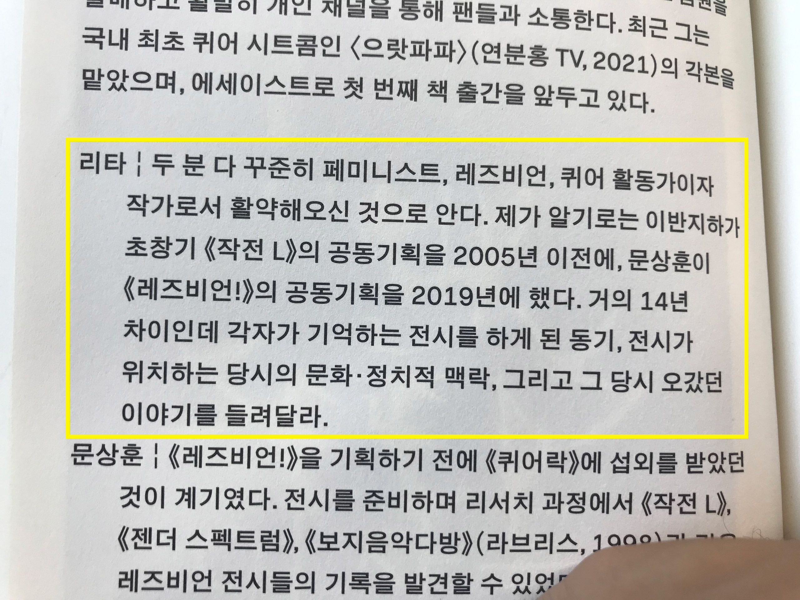

흡수한 빛을 뿜어낼 때 증폭되는 레즈비언의 기쁨
<안녕하세요, 손
계속해서 쓰다가 취소하고 다시 쓰게되는, 콜렉티브 야광의 개인전 ‹윤활유› 리뷰입니다. 제가 이 전시를 봤던 날이 6월 18일이었는데요. 다섯 달이 지난 지금까지도 이 전시의 리뷰 작성을 마치지 못했다는 사실이 참 희한합니다. 한 전시에 대한 기억이 계속해서 나이가 들어, 키가 커가는 아이를 보는 기분이에요.
저는 이 아이가 아프지 않고 무럭무럭 잘 자라기를 바랍니다. 하여 ‹윤활유›와 같은 문제의식을 공유하는 아티클 하나를 데려와 제 전시 경험을 복기해보려 해요.
자, 그럼 시작해볼까요?
1
‹윤활유›는 ‘레즈비언 비가시성’ 이라는 문제를 다루는 전시입니다. 여기서 ‘레즈비언 비가시성’이란 말 그대로 이런 것이겠죠.
왜 보이지 않을까요? 한국에 레즈비언이 없어서 안 보이는가? 아니죠. 있거든요.
퀴어 당사자이거나 그들 가까이에 있는 사람, 혹은 문화예술이나 소수자성에 관심 있는 사람들은 알겠지만 한국에도 퀴어 커뮤니티가 있습니다. 그 커뮤니티에는 게이 커뮤니티도 있고 레즈비언 커뮤니티 역시 있지요.
없는 게 아니라 있는데 왜 안 보일까요? 동성애 혐오의 역사에 대해서는 제가 모르는 게 너무 많아 한국 동시대 미술계로 이야기를 좁혀보겠습니다.
단적인 예로, 요즘 미술에서도 문학에서도 '퀴어'라는 내용이 약진(: 힘차게 앞으로 뛰어 나아감)하고 있습니다. 퀴어 미술 중에서도 게이 미술가 중에는 이강승, 오인환, 최하늘과 같은 굵직한 이름들이 있고 전나환, 조이솝, 이정식, 양승욱, 허호, 최장원 등 꽤나 많은 이름들이 떠오르는데요. 그렇다면 한국 미술계에서 활동하고 있는 레즈비언 미술가 중에는 누가 있을까요?
저는 지금 딱히 떠오르는 사람이 없습니다… 정은영이나 이반지하 같은 작가들이 있긴 하지만 ‘레즈비언 미술가’라는 카테고리보다는 ‘퀴어 미술가’라는 카테고리로 용해되어 불려지는 경우를 더 많이 보았거든요.
그러다가 계간 시청각 2021년 겨울호에서 이와 같은 문제의식에서 출발한 아티클 하나를 발견했습니다. 바로 이연숙(리타) 비평가가 쓴 크리틱(인터뷰) ‘없거나 또는 안 보이거나-동시대 한국 레즈비언 미술이라는 곤란함에 관하여’ 입니다.
위 텍스트는 2010년대를 한국 페미니즘/퀴어 미술사에 특기할만한 시기라고 말하며, 퀴어 미술 중에서도 게이 미술가들의 약진을 언급하고, 다음과 같은 질문을 제기합니다.
레즈비언 미술은 어디에 있는가? 만약 어딘가에 존재한다면, 왜 잘 보이지 않는 것일까?”
야광의 개인전 ‹윤활유›는 위 아티클이 갖고 있는 문제의식에 응답하는 전시로도 생각해볼 수 있겠습니다. ‹윤활유›의 전시 소개말을 보면 다음과 같은 문장이 나오거든요.
공감과 확인에 의한 수치심을 통해 환희를 느끼고, 시각적 포만을 전달하는 전시가 되기를 소망한다.”
저는 여기서 ‘시각적 포만’을 ‘레즈비언 비가시성’에 대한 응답이자 반대말로 받아들였습니다. 각기 다른 시간대에 만들어진 아티클과 전시가 이 정도로 긴밀하게 대화를 나눌 수 있구나 하며 신기해했던 기억이 나는데요. 이렇게 말로만 하니까 전시를 보지 않은 분들에게는 전달이 잘 안되고 와닿지 않을 것 같네요.
본 전시의 하이라이트라고 볼 수 있는 퍼포먼스 <Lick my heart>를 먼저 소개하도록 하겠습니다. 사실 저는 퍼포먼스가 너무 재미 있었기 때문에 전시 자체는 제대로 못 보고 나왔거든요. ^^..
2
2022년 6월 18일, 저는 초여름의 더위를 느끼며 ‹윤활유›가 열리는 윈드밀Windmill에 도착했습니다. 윈드밀의 전시 공간은 지하 2층에 있기 때문에 건물 밖에서 지하 2층까지 가려면 지하 1층의 안내 데스크를 거쳐야 하는데요. 안내 데스크로 가니 A4 꾸러미 하나와 작은 엽서, 그리고 야광 막대 하나를 나누어 주더군요.
엽서에는 전시 참여자들의 이름/크레딧이 적혀 있었고, A4 꾸러미에는 전시 소개글과 이연숙(이하 '리타'로 표기) 평론가, 그리고 김예솔비 평론가가 ‹윤활유›에 관해 쓴 글이 적혀 있었습니다. 야광 막대는 알고 보니 야광 팔찌였어요.
계단을 내려가서 전시 공간에 도착한 후 정면을 보니 커다란 2채널 화면이 저를 떡하니 기다리고 있었습니다.
디제잉을 하시는 분은 예정된 오후 6시가 되자 음악을 틀었고 바로 그때 퍼포먼스가 시작했습니다. DJ 뒤에 있던 2채널 비디오도 켜지고, TV 예능 프로그램에 나올 법한 말소리도 들리기 시작하며, 다양한 의상과 분장을 한 퍼포머 10여 명이 전시장 곳곳을 활보하는 식으로 진행됐는데요.
10여 명의 퍼포머들이 연기한 캐릭터가 모두 다르고 그들이 연출하는 상황이나 분위기, 또 그것들이 과시하고자 하는 레즈비언적 코드가 중요한 퍼포먼스였다고 느껴 어떤 퍼포머들이 있었는지 하나씩 소개드리겠습니다.
우선 하얀색 여름 운동복? 혹은 와이셔츠를 입고 머리에 헤드랜턴을 장착한 퍼포머가 두 분 있었는데요. 무슨 동작을 했는지 기억나지는 않지만 다른 퍼포머들이 모두 혼자서 돌아다니는 반면 두 사람은 짝지어 돌아다녔던 점이 기억에 남습니다.
주로 길거리 편의점에 비치된 플라스틱 의자에 앉아계실 듯한 아저씨나 할아버지의 상의로만 봐온 런닝셔츠를 2,30대 여성이 입는 모습은 처음 봤어요. 의상을 보면서, 원래 저렇게 입는 여성들이 많은 건지 혹은 어떤 미국 드라마에서 한 여성 인물이 입은 런닝 셔츠가 하잎되어 파생된 레즈비언 의복 문화 중 하나인 것인지 궁금증이 일었습니다.
뭔가 방금 문단을 쓰면서 레즈비언을 외국인 보는 것처럼 “어머, 독일 사람들은 다 저런 가봐~” 식의 타자화하는 사고가 작동한 것 같은데요. 제가 레즈비언에 대해 갖고 있는 지식 수준이 현재 이 정도인 것은 사실이고, 본 전시가 저와 같은 비-레즈비언 관객에게도 열린 퍼블릭한 전시인 것 역시 사실이니 솔직하게 보고 느낀대로 쓰겠습니다. 어줍잖게 조심해하거나 필요 이상으로 주저하다가 아무 말도 못해버린 경험이 많아서요.
두번째는 간이 방송국 섹션입니다.
마치 여느 TV 토크쇼처럼, 오른쪽 의자에 앉아 MC와 패널분이 예능 프로그램 혹은 코미디 쇼 특유의 하이텐션으로 계속 이야기를 하는데요. 이야기의 주제는 레즈비언 아니면 레즈비언 연애 혹은 둘 다였던 것 같습니다.
지금 다시 생각해보면 제가 10대 때 무한도전이나 1박2일 같은 TV 쇼를 많이 보고자랐거든요? 남성 출연진으로만 꾸려졌던 그 방송에서는 아주 가끔씩 등장하는 여성 출연진과 기존 출연진을 이성 커플로 엮으려는 방식을 자주 활용했습니다. 그렇게 방송에 긴장감을 조성했었죠. 그에 반해 레즈비언 연애 전선에서 발생하는 긴장감이란.... 제가 20대 초반까지 한 번도 직간접적으로 경험해본 적이 없는 것 같네요. ^^,,,
그들의 애정 행각을 봤다고 하더라도 그게 여성들의 돈독한 우정이나 애정 표현, 혹은 장난 정도로 머리 속에서 필터링되어 제대로 입력되지 않고는 했어요. 근데 이렇게 ‘실제로 있음, 지금도 벌어지고 있음’을 가져와서 떡하니 보여주니까 “아…” 하면서 그동안 제대로 보지 못했던 존재가 내 세계로 들어온 느낌을 받았습니다.
실제 방송국 대기실처럼 여러 분장 소품들이 올려져 있는 긴 테이블도 있었는데요.
테이블에 막 하늘보리랑 백산수 같은 마실 거리나 화장품들이 곳곳에 어질러진 걸 보고, 정말 방송국 테이블은 저렇게 생겼을 수 있겠다는 실감이 났습니다. 근데 보통 방송국에서 촬영장이랑 대기실은 상당한 거리를 두고 있지 않나요? 뭔가 저렇게 딱 붙어있으니까 왠지 모르게 웃프네요… 이 퍼포먼스에 등장하는 퍼포머들의 분장을 저기서 다 한 게 아닐까? 라는 생각도 들면서요.
그리고 위 사진에서 아주 중요한 건 오른쪽에 있는 검은 복면의 카메라워맨인데요. 이 퍼포먼스에는 퍼포머들 이외에 그 퍼포머들을 촬영하는 사람들이 세 명 정도 있었거든요. 특기할만한 점은 저렇게 찍은 영상이
위 사진의 오른쪽 화면에서처럼 동시 송출된다는 점입니다. 오른쪽 화면에 있는 사람이 아마 간이 방송국 세션에서 의자에 앉아 토크쇼 진행하던 사람과 동일 인물일 거에요. 눈과 눈썹 사이의 분장으로 미루어봤을 때.
같은 방식으로 퍼포머들 중에서
이렇게 돌고래 두상에 상어 이빨을 한 탈을 쓰고, 선비처럼 점잖게 돌아디닌 퍼포머도 있었는데요. 위 사진은 돌고래 퍼포머가 2채널 스크린과는 또다른 스크린을 통해 송출되는 장면입니다.
그리고 또,
페이스 페인팅하고 새까맣게 입은 후 유령처럼 돌아다니는 퍼포머가 있었고
'Be The Reds' 가 적힌 빨간색 티셔츠를 입고 보통 관람객인 척 돌아다니는 퍼포머도 있었습니다.
마스크만 안 썼는데도 퍼포머인 걸 알게된 건 아니고요. 공포 영화에 나올 법한 정도는 아니지만 비슷한 느낌이 나는 유유한 눈빛을 하고 있었습니다....
이 분은 뭘까요? -> 어떤 레즈비언적 코드를 품은 캐릭터일까요?
Be The Reds.
Be The 레즈.
비 더 레즈.
이건 좀 말도 안 되는 추론이긴한데요. 저 빨간색 티셔츠가 2002년 월드컵 때 붉은 악마라는 이름으로 전국민이 열광하며 대부분 입고 있었던 티셔츠인데, 그 티셔츠에 레즈비언적인 관점을 입혀 대한민국의 국민성에 레즈비언성을 기입하려는 시도가 될 수 있는 거 아닌가…… 싶네요. 놀랍게도 구글에 검색해보면 실제로 <비 더 레즈(Be The Reds)>라는 이름의 GL 웹소설이 있어요.
쓰다보니 너무 멀리 온 것 같네요. 대한민국의 국민성에서 레즈비언적인 무언가를 아예 찾아볼 수 없는 것은 아니지 않나 하는 생각 정도로 줄이겠습니다.
그리고 마지막으로는 검정 라텍스 의상을 입고 꿈적꿈적한 그루브를 타며 대걸레질하는 분이 있었습니다.
퍼포먼스에 볼거리도 되게 많고 음악도 리듬타기 좋았어서, 저도 라텍스 퍼포머만큼은 아니지만 박자에 몸을 맡기며 전시 공간을 활보했습니다. 사실 퍼포먼스를 거의 파티에서 춤 추는 것처럼 관람해서 이렇게 리뷰를 쓸만큼 정보가 머리속에 남아있지는 않습니다. 요근래 했던 미술 관련 경험 중 거의 TOP 5 안에 들었을 정도로 즐거웠어요.
퍼포머들은 위와 같이 계속해서 돌아다니다가 퍼포먼스 시간이 끝났을 때 즈음 퇴장했습니다. 저는 퍼포먼스가 이제 끝났나? 하고 두리번 거리고 있었는데요. 얼마 지나지 않아 앞서 언급했던 2채널 스크린에서 어떤 영상이 재생되었습니다.
레즈비언으로 살아가는 것에 대한 이야기가 많이 나오는 인터뷰 영상이었어요.
자신은 크리스틴 스튜어트를 좋아했었다는 이야기도 나오고, 레즈비언들 중에는 건강한 사람이 없다는 이야기도 나오고, 제가 모르는 레즈비언에 대한 은어가 많이 나왔습니다. 분명 저와 같은 한국말을 하고 있고 한국 사람처럼 생겼는데도 내가 10대 때 접했던 문화예술 컨텐츠와는 굉장히 다른 것들을 보며 자랐구나. 10대 동안 퀴어라는 단어를 들어본 적도 없었던 나와는 굉장히 다른 문화적 자양분을 흡수하며 자라왔구나. 그런 생각이 들었습니다.
근데 저 'Be The Reds' 티셔츠, 앞서 언급했던 유유한 퍼포머가 입고 있었던 거랑 똑같거든요? 간이 방송국 세션의 토크쇼 진행자나 돌고래-상어탈 퍼포머도 위 인터뷰 영상에 등장하고요. 검정 라텍스 의상을 입고 대걸래질하던 퍼포머도 사실
요렇게 전시에 있는 사진 작업에 나와요.
정확하진 않지만 제가 봤던 퍼포먼스는, 본 전시에 출품된 사진이나 영상 작업 등에 나오는 캐릭터들을 전시 공간으로 소환하여 활보하게 만든 것이 아닌가란 추측을 해봅니다.
인터뷰나 다른 작업에서 처음 선보였던 캐릭터들을, 퍼포먼스에서 실제 몸으로 등장시키고, 그걸 또 영상으로 촬영해 동시 송출하는 방식의 퍼포먼스였네요. 시각적 포만이라는 목표에 부합하는 증폭 방식이었습니다.
3
다시 계간 시청각, 리타의 크리틱으로 돌아오겠습니다.
이 크리틱에서 리타는 인터뷰의 형식을 선택했어요. 페미니스트. 레즈비언, 퀴어 활동가이자 작가로서 꾸준히 활약해온 문상훈과 이반지하를 인터뷰했습니다.


보시다시피, 되게 재미있어요.
“그렇다면 우리는 레즈비언 미술이라는 비평적 범주를 확장해 여성-레즈비언-활동가들의 ‘비미술'이라는 여집합을 기꺼이 레즈비언 미술로서 전유해야 하지 않을까?” 라는 태도를 바탕으로 하는 유용한 지식들이 많이 심어져있습니다.
사실 제가 이 아티클을 가져온 이유는 따로 있습니다. 이 아티클이 야광의 개인전 ‹윤활유›의 문제의식과 공명하는 부분도 물론 있지만, 앞서 언급했다시피 리타가 ‹윤활유›에 대한 일종의 리뷰를 작성했고 그게 전시 소개글과 같이 배부되거든요?
제가 주목하는 것은 바로 이러한 네트워크입니다.
크레딧을 보시면 엄청 많은 사람들이 참여했죠?
전시 공간이랑 후원 빼고 총 33명. 이 전시, 레즈비언 비가시성을 다루는 이 전시를, 이 전시라는 제도를 작동시키기 위해 33명이 모였습니다. 여기서 중요한 점은 저 33명이 이 전시를 위해서만 단발적으로 모였다가 그 뒤로 안 보는 관계가 아니라는 사실입니다. 예를 들어 퍼포먼스에 참여하신 우지안과 현호정은 올해 초 TINC(구 명동성당) 에서 ‹멀리 있다 우루는 늦을 것이다›라는 제목의 연극을 했었는데요. 거기에 야광의 김태리와 전인은 사진 촬영과 미술, 무대 디자인으로 참여했습니다.
이걸 제가 어떻게 알았냐면, 이번 전시에서는 글과 촬영 감독으로 참여한 김예솔비가 몇 달 전 씨네21 영화평론상 우수상을 수상했을 때 위 크레딧에 적힌 분들께서 SNS로 마구마구 축하해주는 모습을 봤었거든요? 그 축하하는 모습을 보는 게 좋더라고요. 정말 다같이 기뻐하는 것처럼 보여서요. 리타의 표현을 빌려오자면 ‘예술, 연애, 활동, 일상이 분리 불가능하게 뒤섞인’ 이 느슨하고도 긴밀한 네트워크가 참 돈독해 보였습니다. 저 내부 구성원 말고도 이 전시를 작동시킨 사람들은 더 있는데요.
미술 잡지 '월간미술' 7월호에는 이진실 비평가가 쓴 ‹윤활유›의 리뷰 기사가 있었고, 미술 잡지 '더원 미술세계' 7월호에는 김주영 기자가 진행한 야광의 인터뷰 기사가 있었습니다. 또 레즈비언 커뮤니티에서 활발하게 활동하시는 금개와 드랙 아티스트인 아장맨이 진행하는 팟캐스트 <생방송 여자가 좋다> 15화에서도 본 전시가 소개됐어요.
저는 A라는 것이 발생했다고 했을 때, 그것에 대한 반응으로서 그게 B이든 A'이든 X든 많이 일어나는 게 좋다고 생각하는 입장이라 이런 일련의 움직임들이 저는 무척 흥미롭고 좋다고 느꼈습니다. 한국에 계보 없던(혹은 없다고 여겨지던) 레즈비언 미술이 이런 과정으로 만들어지는 건가 하는 생각이 들기도 하고요. 만약 제가 앞으로도 미술 생활을 계속 한다면 이처럼 서로가 서로의 협업자가 되어주고, 스태프가 되어주며, 관객이 되어주는 커뮤니티에서 하고 싶다는 바람이 하나 생겼습니다.
4
마지막으로 이반지하의 말을 빌려 마치겠습니다.
레즈비언의 존재가 조금이나마 더 가시화되는 데에, 한국 레즈비언 미술이 역사에 기입되는 데에 제가 조금이나마 보탬이 되었다면 기쁘겠네요. 여러모로 많이 배울 수 있는 사람들 같아요.
그럼 ‹윤활유›에 대한 메일은 여기까지….
안녕.
재훈 드림